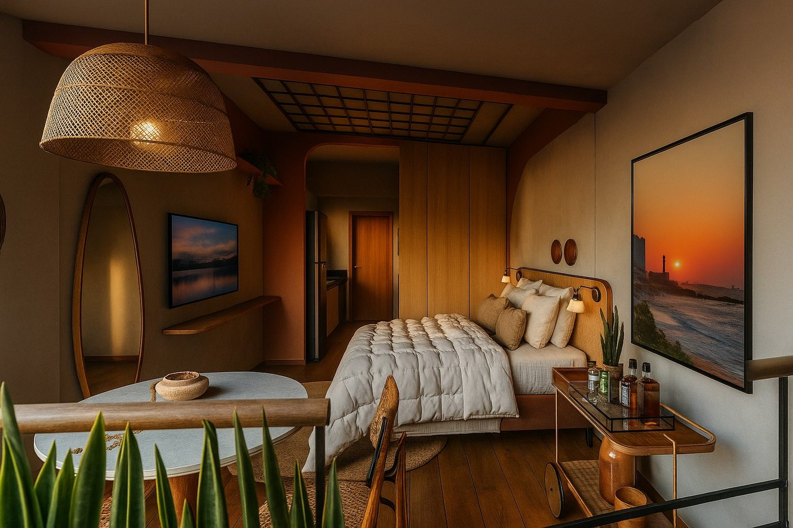

Início · Como trabalho
Design afetivo: como eu trabalho.
“Mais do que reformas e decorações, são espaços com afeto e personalidade.” Esta página mostra o que isso quer dizer no dia a dia de um projeto. Cada projeto é definido em conversa.
Conceito
O que é design afetivo
Design afetivo é projetar a partir das pessoas: o que elas viveram, o que guardam, como gostam de receber e de descansar. O espaço deixa de ser só bonito e funcional e passa a contar uma história.
“Escolheu seguir a linha do Design Afetivo no Neri Interiores e colocar sentimentos bons nos espaços, ela acredita que os ambientes precisam transmitir sensações e lembranças.”Perfil da Marcela no Revestindo a Casa
Assinatura
Por que cada projeto tem um nome
Os projetos da Neri Interiores ganham nomes: Apê Afeto, Lavabo Apartamento 602, Mini Market, Studio Orí. O nome resume a ideia — e ajuda todo mundo a lembrar dela durante a obra.
“Gosto de nomear todos meus projetos de forma carinhosa e com significado”Post da Neri Interiores no LinkedIn
Passo a passo
Etapa por etapa
- A conversaQuem mora ou trabalha ali, como usa o espaço, o que guarda de memória e o que incomoda hoje. A escuta vem antes do desenho.
- O briefing e o nomeAs necessidades viram um programa — e o projeto ganha um nome carinhoso, com significado, como ela faz com todos.
- O estudoLayout, materiais, cores e iluminação decorativa. Muitas vezes com imagens em 3D para você enxergar o espaço antes da obra.
- O detalhamentoMedidas, marcenaria, revestimentos e especificações, para que o projeto possa ser orçado e executado.
- A obra e o acompanhamentoQuando combinado, visitas e orientação durante a execução, para o espaço sair como foi pensado.
É assim que um projeto de interiores costuma se organizar. O que entra no seu, e em que ordem, é combinado na primeira conversa.
Imagens de projeto
Ver antes de construir

Imagens em 3D ajudam a decidir cor, material e proporção antes de comprar e construir. Muitos projetos da Neri Interiores são apresentados assim — o Refúgio por Roca, finalista do Prêmio Casa e Jardim 2026, é um deles.
Sem complicar
Real e possível
“Nosso trabalho vai muito além de funcionalidade e estética, é sobre investimento. Projetar espaços reais e possíveis a serem executados […] Nenhum bicho de sete cabeças, tudo pra descomplicar!”Reel da Marcela no Instagram
Por isso a conversa sobre investimento acontece cedo: o projeto é desenhado para caber no que você pode e quer fazer, e pode ser executado em etapas quando fizer sentido.
Dúvidas frequentes
Perguntas comuns
O design afetivo é um estilo de decoração?
Não é um estilo fixo: é um jeito de projetar a partir de quem usa o espaço. Por isso um projeto não se parece com o outro.
Posso aproveitar os meus móveis?
Muitas vezes, sim — objetos e móveis com história fazem parte do design afetivo. Isso é avaliado em conversa.
Recebo imagens em 3D?
Muitos projetos dela são apresentados em render. O que entra no seu é combinado no início.
Vamos conversar
Cada projeto começa numa conversa.
Salvador e região, com hora marcada. Conte pelo WhatsApp o que você quer transformar — a Marcela responde para combinar.